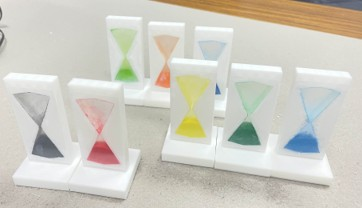
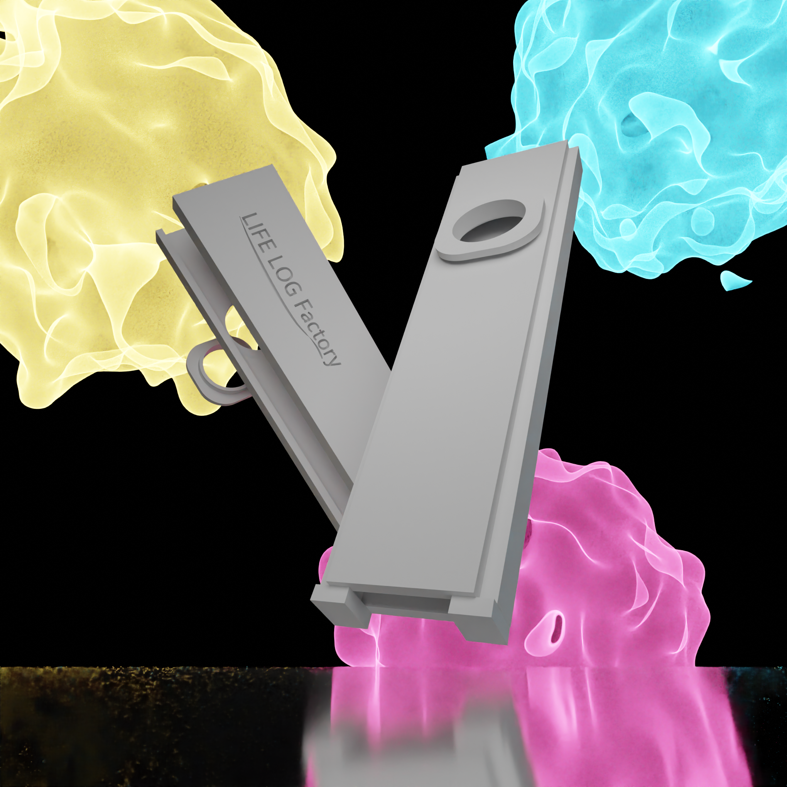

私たちは、“ライフルログ”に関する“もの･ことづくり”を通じて、健康や地域社会、さらには環境に関わるさまざまな課題の解決を目指した製品開発に取り組むサークルです。 これまでにない斬新で独自性のある製品を生み出すことで、新しい価値の創造に挑戦しています。

誰もが飽きずに続けられる呼吸機能改善･維持のためのトレーニングゲームの開発。 呼吸の「長さ」「力強さ」「リズム」の要素を意識してトレーニングすることで呼吸機能を高める。

色や音が異なることで、スピード感覚が変わる心理的効果を用いた工業デザインの開発。

呼吸を使った道具として、膜鳴楽器であるKazooを製作しています。このオリジナルKazooは分解することができ衛生的で、膜も身近なポリ袋等を用いて簡単に鳴らすことができます。